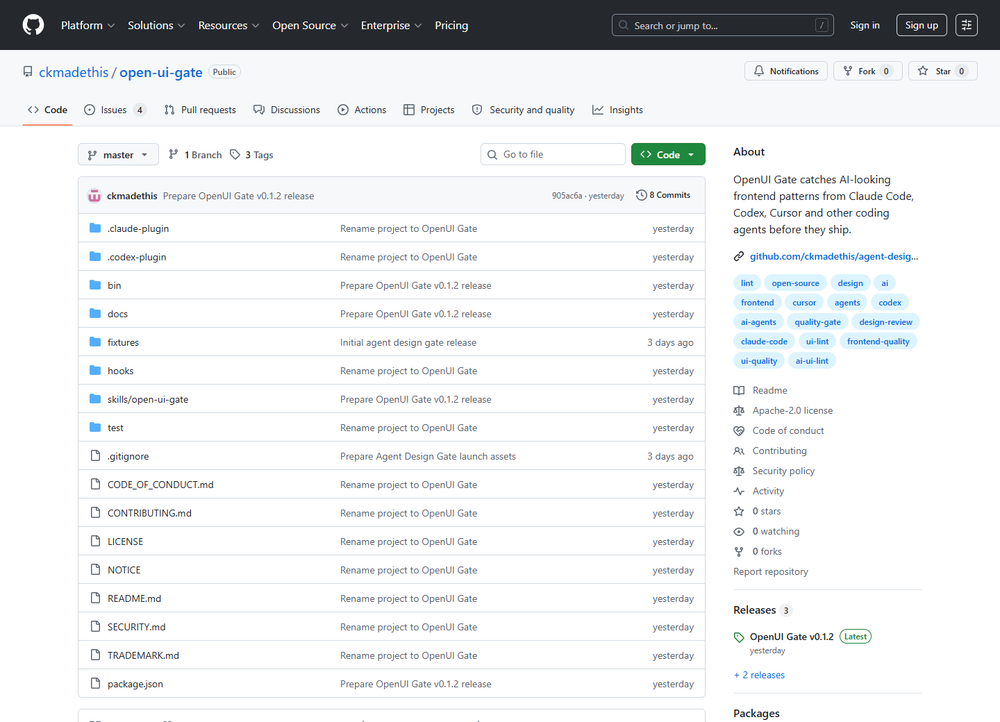

Claude Code
Use the hook reminder when an agent edits frontend files, then run the CLI before the final response.
AI UI lint for agent-built frontends
OpenUI Gate is an Apache-2.0 CLI and hook pack that scans frontend files for generic agent output before it ships.
npx --yes github:ckmadethis/open-ui-gate scan --path ./app --fail-on warn

No paywall claim. No fake community count. OpenUI Gate is a small public tool for teams who want a hard stop before generated frontend work becomes a commit.
Use the hook reminder when an agent edits frontend files, then run the CLI before the final response.
Use OpenUI Gate after UI edits to catch generic copy, weak actions and obvious fake media.
Run the scan against app or component folders before accepting agent-generated frontend changes.
Use JSON output when another tool needs machine-readable findings.
The first release checks 8 rule families that make generated frontend work look generic even when the code compiles.
Flags dummy Latin copy, unfinished task-marker copy and obvious fake company language.
Flags vague power-copy and similar marketing defaults.
Flags common violet, purple and indigo gradient recipes when they dominate UI code.
Flags decorative background filler often used to fill space.
Flags generic button text that needs product-specific action language.
Flags image-like elements that lack useful alternate text.
Flags placeholder image files, stock placeholder URLs and replacement tokens.
Flags dense card-like wrapper patterns that need human layout review.
It is not a replacement for ESLint, accessibility testing or visual regression tooling. It covers the smaller gap those tools usually miss.
| Tool type | Primary job | OpenUI Gate overlap | Use together? |
|---|---|---|---|
| ESLint / Biome / Stylelint | Code correctness, conventions and syntax hygiene. | OpenUI Gate checks taste-risk patterns in UI source text. | Yes |
| Chromatic / Percy / Argos | Visual regression and review workflows. | OpenUI Gate runs before screenshots and can catch obvious generated content. | Yes |
| axe DevTools | Accessibility checks and remediation workflows. | OpenUI Gate only includes lightweight alt-text signal checks. | Yes |
| Component libraries | Reusable UI primitives and design tokens. | OpenUI Gate is not a component library or design system. | Different job |
The current public release is v0.1.2. Anything not verified stays off the page.
OpenUI Gate is not published on npm yet. The current install command runs directly from the public GitHub repository.
OpenUI Gate works best inside agent workflows, pre-commit scripts and review steps where frontend output needs a hard checklist.
Scan an app, source or component folder after an agent has made frontend changes.
Each finding includes a rule ID, severity, file path, line number and short match.
Replace generic copy, fake media and template-heavy styling before merge.
open-ui-gate: scanned 1 UI files [ERROR] placeholder-content page.tsx:7 - Placeholder content is visible in UI code. (dummy Latin copy) [WARN] generic-ai-copy page.tsx:6 - Generic marketing phrase often produced by AI agents. (vague power-copy) [WARN] purple-gradient-default page.tsx:3 - Dominant purple/indigo/violet gradients often read as generic AI UI. (gradient utility) [ERROR] missing-image-alt page.tsx:8 - Image-like element is missing alt text. (<img)
Short answers for developers deciding whether to try it on a frontend repo.
Run OpenUI Gate against frontend files before merge. It flags common generated UI patterns so an agent or developer can fix them before shipping.
No. It is a CLI and hook pack. It does not provide components, tokens or a UI kit.
Not yet. Use the GitHub npx command until the npm package is published.
OpenUI Gate is open source under Apache-2.0, with NOTICE and trademark guidance in the repository.